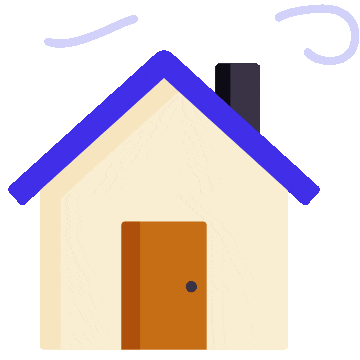

User Manual
OVERVIEW
- 5-3-1 Enneagram: Investigator, Achiever, and Perfectionist. "Remarkably efficient, hard-working and competent. While sometimes self-righteous, pragmatic and tactful enough not to compromise goals by being too inflexible. Can be clever, self-confident, perfectionist. Introverted, Intuitive, Thinking, Judging, and Assertive. I think this description is a solid one.
 STRENGTHS
STRENGTHS
- Cross-functional: I’m a generalist at heart and enjoy projects that utilize a broad set of skills across product, data, and growth.
- Systems thinking: I reduce complexity into systems in order to better understand. I love thinking deeply about interesting problems.
- Moving fast: I get frustrated when I’m not producing frequent output and therefore I like to iterate at a pretty quick pace.
- Operating without context: I struggle contributing to decisions where I don’t have sufficient context or background.
- Starting simple: My brain will skip baseline approaches and try to do too much, too fast. Don't be afraid to rein me in.
- Overextending myself: I get excited by lots of things and sometimes (okay, all the time) that means I spread myself too thin.
- Keep it simple: Sometimes we have to go into the weeds, but it shouldn't be the default. If it's not the focus, keep it simple.
- Opinions are useful: Both people and products should be opinionated. Taking a stance helps move the conversation forward.
- Learning in public: I'm happier when I'm sharing things that I find helpful. This often means a steady drip of blog posts.
- Bias towards action: Getting started is the best way to begin making progress and start learning. Avoid unchecked inaction.
- Growth mindset: I’m constantly challenging myself to improve. When I get too comfortable, my work and happiness suffer.
- Bigger bets: Willing to pass on small opportunities for potential step changes.
- Time for thought: I block off time to explore ideas that might not relate to current projects. Without this time, I feel like a machine.
WEAKNESSES
PRINCIPLES
FAVORITE QUOTES
yesterday is a history. tomorrow is a mystery. today is a gift. That's why it's called the present
- Master Oogway
A man is great not because he hasn't failed; a man is great because failure hasn't stopped him.
- Confucius
We suffer more in imagination than in reality
- Seneca
You will not be punished for your anger, you will be punished by your anger. Nothing can harm you as much as your own thoughts unguarded.
- Gautam Buddha
GET IN TOUCH
If you want to get in touch, I'm most responsive over email and I tend to be pretty active on instagram as well.